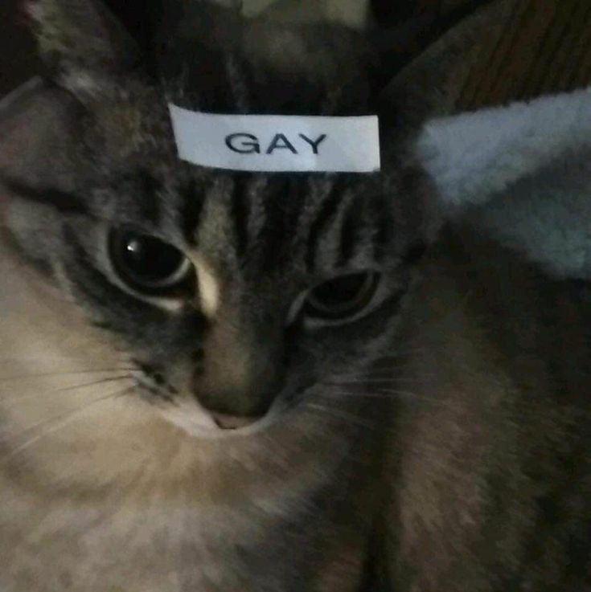
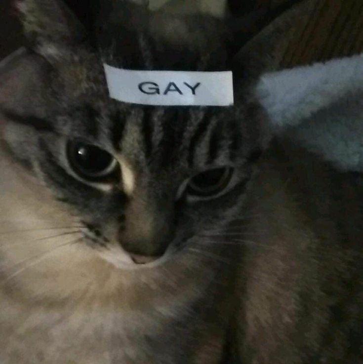

Imágenes de gatos
 

Listas de michis
Cosas que los mimis aman:
- Pastito
- Mimir
- Atún
- Perseguir lagartijas :c
Cosas que los mimis odian:
- Agua
- Al veterinario
- Que los despierten
⤠Si quieres ver videos de gatos, da click aquà â¤
--Formularios--
¿Tu michi es esponjosito?
¿Cómo es tu gato?